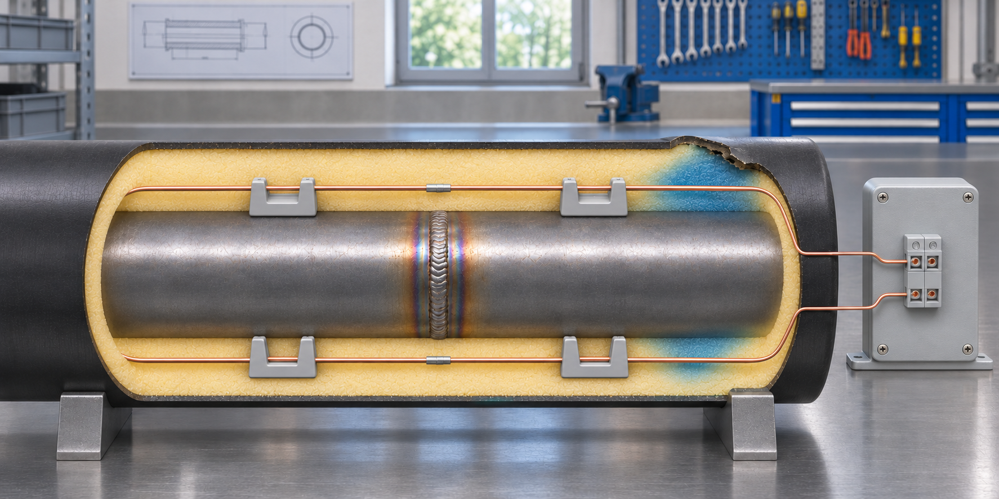

Контроль увлажнения
СОДК не останавливает протечку — она позволяет её обнаружить и локализовать
Два тонких медных проводника идут в ППУ-слое вдоль трубы. Измерительный прибор оценивает состояние цепи и изоляции. Без схемы, доступа к терминалам и корректно собранных стыков система не выполняет свою задачу.

Что входит в систему
| Элемент | Роль | Риск ошибки |
|---|---|---|
| Проводники | Формируют измерительную линию. В стыке диаметр проводника около 1,5 мм. | Слишком толстый провод, петля, касание стали. |
| Обжимные гильзы | Соединяют проводник с проводником. Типовой ориентир для данного КЗС — лужёная гильза 1,7×15 мм. | Болты, скрутка, несовместимая гильза. |
| Держатели | Четыре U-образных держателя: слева и справа от шва на 12 и 6 часах. Основание каждого лежит на стали; длина основания около двух высот. | Отдельные L-образные стойки, неверная высота провода. |
| Терминалы/кабели/прибор | Дают доступ к измерению и локализации. | Нет схемы, несовместимые разъёмы, недоступные точки. |
Как выглядит корректный стык
- Верхний и нижний проводник соединены каждый со своим продолжением, а не между собой.
- Гильзы малы и соразмерны проводнику; это не крепежные болты.
- Проводники проходят посередине толщины ППУ, равноудалённо от стали и наружной оболочки; основания держателей опираются на стальную трубу.
- До заливки проводятся предусмотренные технологией проверки цепи и изоляции.
Что выясняет менеджер
- Есть ли СОДК в проекте и в поставляемых ППУ-изделиях?
- Нужны ли только стыковые комплектующие или вся система: терминалы, кабели, прибор?
- Есть ли схема трассы с длинами участков и точками контроля?
- Кто монтирует, кто измеряет и какой документ фиксирует результат?
Менеджер не интерпретирует показания прибора. Он обеспечивает полную комплектность запроса, а измерение и вывод оставляет квалифицированному специалисту.
Отраслевая справка: монтаж СОДК. Комплектность и типы изделий берутся из каталога ТИК.